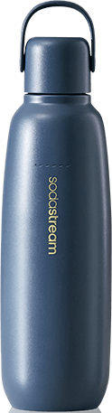
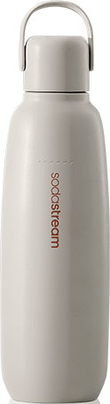
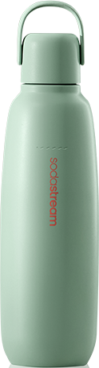
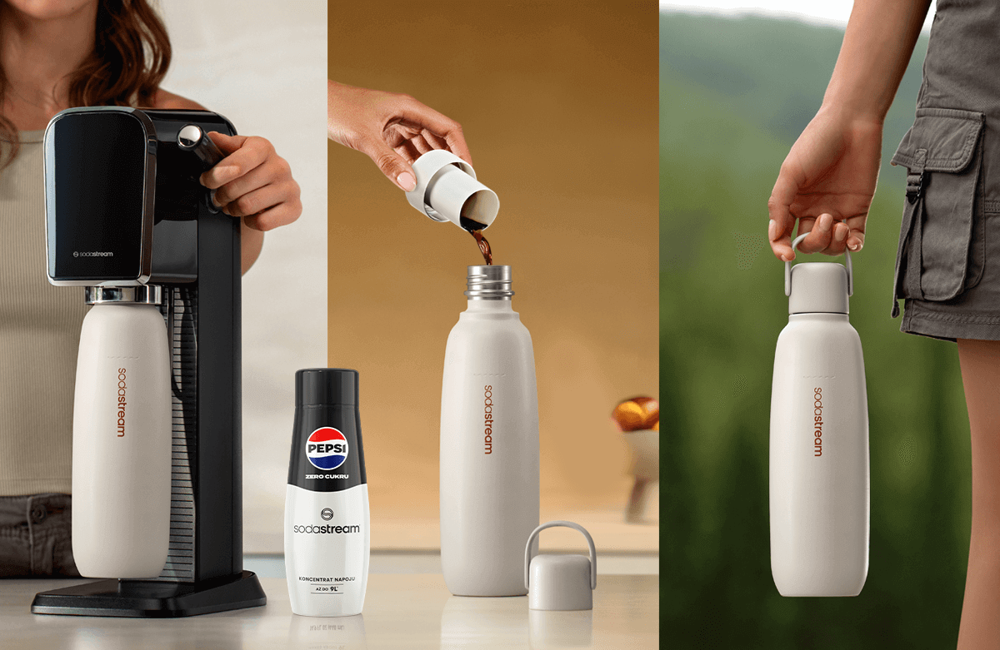
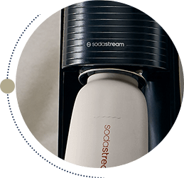
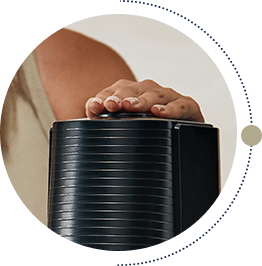
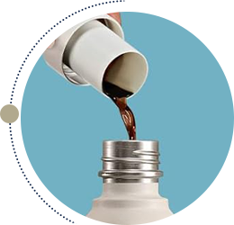

Butelka
termiczna do gazowania wody Beżowa, 0,9 l
Złap ulubione bąbelki do termicznej butelki i zabierz je ze sobą!
Poznaj nowy wymiar orzeźwienia z SodaStream Fizz&Go – butelką termiczną, w której możesz gazować wodę.
Przemyślana konstrukcja łączy wytrzymałość, funkcjonalność
i wyrafinowany design, zapewniając Ci komfort i
nawodnienie przez cały dzień.
Perfekcyjnie zaprojektowana i dopracowana w każdym detalu - smukła, szczelna
i niezwykle wygodna w użytkowaniu.
Subtelna elegancja
wybierz beżową butelkę SodaStream Fizz&Go i postaw na naturalną harmonię. Ten ponadczasowy odcień doskonale komponuje się z każdą stylizacją, dodając jej nutę klasy i minimalizmu.
elegancki granat
uroczy beż
pastelowa mięta
elegancki granat
uroczy beż
pastelowa mięta
Gazuj wodę bezpośrednio w butelce i ciesz się smakiem orzeźwienia w wyjątkowym stylu!
SodaStream Fizz&Go – butelka, która przez lata dotrzyma Ci kroku
Pożegnaj jednorazowe butelki plastikowe i postaw na trwałość! SodaStream Fizz&Go to bidon termiczny, który będzie Ci służyć przez lata, łączy w sobie niezawodność, komfort użytkowania i świadome podejście do środowiska.
Co sprawia, że SodaStream Fizz&Go jest naprawdę wyjątkowa?
Hermetyczna konstrukcja z silikonowym paskiem i uszczelką zapewnia szczelność.
Bezpieczna w użytkowaniu – wykonana z materiału wolnego od BPA.
Łatwe czyszczenie! Butelki Fizz&Go możesz umyć w zmywarce.
Wykonana z wysokiej jakości stali nierdzewnej 18/8, odpornej na korozję i uszkodzenia.
SodaStream Fizz&Go butelka termiczna, w której nagazujesz wodę!
Wolisz orzeźwiające bąbelki w upalne popołudnie czy rozgrzewający napój* w zimowy poranek? SodaStream Fizz&Go zadba o Twój komfort niezależnie od pogody. To butelka termiczna, łącząca funkcjonalność kubka termicznego i bidonu, w której możesz bezpośrednio gazować wodę – to wszystko w jednym, stylowym rozwiązaniu.
*UWAGA! Nie nasycaj gazem wody o temperaturze powyżej 45°C. Zachowaj szczególną ostrożność podczas przechowywania gorących płynów w butelce i otwierania butelki zawierającej gorące płyny.
gazuj
miksuj
i w drogę

Termiczna
butelka do
gazowania
Krok 1
Napełnij butelkę termiczną SodaStream Fizz&Go 0,9 l wodą i umieść ją w saturatorze SodaStream.
Krok 2
Naciśnij przycisk gazowania i powtórz tą czynność do uzyskania idealnego poziomu nagazowania.
Krok 3
Dodaj syrop SodaStream i opcjonalnie ulubione dodatki.
Do jakich saturatorów pasują butelki termiczne SodaStream
Fizz&Go?
Wielorazowe butelki SodaStream Fizz&Go 0,9 l są kompatybilne z saturatorami SodaStream Art, Terra, Duo i
Ensō.
Czy butelka termiczna będzie odpowiednia do codziennego
użytkowania?
Butelki SodaStream Fizz&Go sprawdzą się zarówno w podróży, jak i na co dzień. Możesz je zabrać ze sobą na
spacer po
mieście, do pracy, na siłownię, w długą trasę lub na weekendowy wypad. Dzięki smukłemu kształtowi pasują do
uchwytów
samochodowych i są idealnym towarzyszem każdej podróży.
Czy istnieje bidon, który sprawdzi się w każdej
sytuacji?
Tak! SodaStream Fizz&Go to wielorazowa butelka 3 w 1. To unikalna kombinacja butelki do saturatora, bidonu i
kubka
termicznego, który utrzyma idealną temperaturę Twoich napojów – w pociągu, na spacerze, w pracy lub na
uczelni.
Beżowy towarzysz Twoich dni - SodaStream Fizz&Go
Szukasz butelki, która idealnie wpisze się w Twój aktywny styl życia i podkreśli Twoją osobowość?
Beżowa butelka
SodaStream Fizz&Go to połączenie funkcjonalności,
elegancji i troski o środowisko.
W pracy i na treningu: SodaStream Fizz&Go utrzyma idealną temperaturę Twoich napojów - zarówno
orzeźwiającej wody z bąbelkami
jak również rozgrzewającej herbaty.
Na szlaku i w mieście: Zabierz ją na rower, pieszą wędrówkę lub na weekendowy wypad za
miasto.
Ciesz się ulubionymi napojami w idealnej
temperaturze, podziwiając piękno natury.
Stylowy dodatek: Ten elegancki bidon w subtelnym, beżowym kolorze to prawdziwa ozdoba. Doskonale
wpasuje się w każdą stylizację.
SodaStream Fizz&Go na prezent: Wielorazowa butelka termiczna spodoba się nawet najbardziej
wymagającym.
Wolisz inny kolor? Poznaj wersje w eleganckim granacie i modnej mięcie.
Zostań mistrzem miksologii z SodaStream
Zapomnij o zwykłej wodzie i gotowych napojach ze sklepu! Z SodaStream to Ty decydujesz, co pijesz. Odkryj nieograniczone możliwości:

Klasyka gatunku:
Masz ochotę na Pepsi, Mirindę lub pyszny 7Up? Dodaj koncentrat napoju SodaStream do wody gazowanej i gotowe.
Owocowe szaleństwo:
Stwórz własne, orzeźwiające napoje z syropami bez dodatku cukru takimi, jak Pomarańcza Mango, Marakuja czy Owoce Leśne.

Koktajlowe party:
Zaskocz znajomych! Wykorzystaj bezalkoholowe bazy do koktajli i moktajli SodaStream Crafted i stwórz niepowtarzalne kompozycje, które zachwycą każdego.